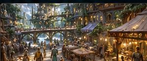
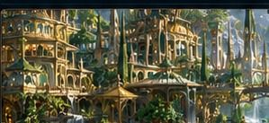
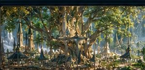
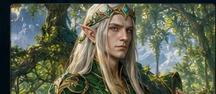

Do-Iktis
❧ Do-Iktis Miasto Wielkiego Drzewa „Wielkie drzewa nie rosną w pośpiechu. Lecz w ciszy, czerpiąc siłę z tego, co niewidoczne.”
Do-Iktis jest stolicą królestwa Sylvaran i jednym z najbardziej niezwykłych miast Atlamaru. Zbudowano je wokół ogromnego Drzewa Życia, którego potężny pień, konary i korzenie stały się naturalnym fundamentem dla elfickich wież, platform oraz mostów.
„Wielkie drzewa nie rosną w pośpiechu. Lecz w ciszy, czerpiąc siłę z tego, co niewidoczne.”
❖Informacje ogólne
Do-Iktis jest stolicą królestwa Sylvaran i jednym z najbardziej niezwykłych miast Atlamaru. Zbudowano je wokół ogromnego Drzewa Życia, którego potężny pień, konary i korzenie stały się naturalnym fundamentem dla elfickich wież, platform oraz mostów. Architektura miasta nie próbuje podporządkować sobie natury. Wyrasta z niej, oplata ją i dostosowuje się do jej rytmu.
Miasto rozciąga się wertykalnie na trzech poziomach. Każdy z nich ma własny charakter, mieszkańców i codzienny rytm. Do-Iktis jest jednocześnie centrum władzy, magii, rzemiosła i kultury elfów, a jego dobrobyt nierozerwalnie wiąże się ze zdrowiem Drzewa Życia.
◆Trzy poziomy miasta

Do-Iktis zostało ukształtowane wokół Drzewa Życia. Wysokość, na której mieszka dana osoba, często odzwierciedla jej majątek, pozycję i dostęp do królewskich struktur.
Pierwszy poziom - Dolne Miasto
Największa i najbardziej zaludniona część Do-Iktis. Znajdują się tu tawerny, sklepy, targowiska, warsztaty, domy mieszkalne oraz większość usług. Żyje tutaj około 80% populacji. Obcokrajowcy mogą przebywać na tym poziomie, choć wejścia i wyjścia są kontrolowane przez żołnierzy miasta.
Drugi poziom - Górne Miasto
Dzielnica zamożnych mieszkańców, wpływowych kupców i mistrzów rzemiosła. Około 15% ludności może pozwolić sobie na życie na tym poziomie. Nie jest wymagany formalny tytuł ani specjalne zezwolenie, lecz ceny i standard życia skutecznie ograniczają dostęp. Można tu znaleźć wyjątkową biżuterię, stroje, dzieła sztuki i przedmioty najwyższej jakości. Broń pojawia się rzadko, ale należy do najlepszych na kontynencie.
Trzeci poziom - Szczyt Królewski
Najwyższa część miasta, położona w pobliżu korony Drzewa Życia. Znajduje się tu siedziba Króla, najważniejsze pomieszczenia dworu i obiekty związane z władzą. Dostęp mają jedynie osoby zaproszone przez Króla oraz uczestnicy najważniejszych świąt i uroczystości.


✦Religia i magia
Najważniejszymi bóstwami czczonymi w Do-Iktis są Corellon Larethian, patron elfów, magii i sztuki, oraz Sylvanus, bóg dzikiej przyrody. Religijność mieszkańców jest silnie związana z elficką tradycją, szacunkiem do natury i przekonaniem o konieczności zachowania równowagi.
Magia jest powszechnym elementem życia. W mieście działa największe Kolegium Czarodziejów na kontynencie, a nadworni czarodzieje odpowiadają bezpośrednio przed Królem. Niedaleko Do-Iktis znajduje się autonomiczna Wioska Druidów, w której kształciło się około 90% druidów z całego kontynentu.
♛Władza i polityka

Do-Iktis jest monarchią absolutną. Najwyższą władzę sprawuje Król Farxalim Vael'Sylvar, znany również jako The Woodwalker. Jego panowanie trwa niemal 400 lat. Ostateczny rozkaz należy zawsze do Króla, nawet jeśli codzienne dowodzenie i zarządzanie powierzono generałom oraz zaufanym doradcom.
Wokół monarchy działa grono najwierniejszych osób, w tym nadworni czarodzieje. W mieście obecna jest również Starszyzna, która zajmuje się sprawami wewnętrznymi, lecz nie ingeruje w decyzje wykraczające poza lokalne sprawy Do-Iktis. Król nie wskazał jeszcze następcy tronu.
Król jest postacią niezwykle magiczną i jedynym władcą noszącym koronę wykonaną z kryształów księżycowego kruszcu. Materiał nie pochodzi z księżyca. Jego pozyskiwanie wymaga wyjątkowej wiedzy, a kryształy korony zostały nasycone magią przez Króla oraz najbardziej zaufanych czarodziejów dworu.
Król posiada małżonkę i dwoje dzieci. Starsza córka ma około 90 lat, a najmłodsze dziecko około 30 lat. Oficjalnie nie wyznaczono dziedzica, a decyzja o przyszłości tronu pozostaje w rękach monarchy.
◆Rootbound i Krąg Druidów
Rootbound to niezależna organizacja Strażników Drzewa Życia. Nie jest częścią armii Do-Iktis ani Gwardii Królewskiej. Jej członkowie odpowiadają za bezpośrednią ochronę Drzewa i współpracują ściśle z Kręgiem Druidzkim znajdującym się nieopodal miasta.
Krąg Druidów koncentruje się na wiedzy, nauczaniu i praktykach druidycznych. Wioska Druidów posiada autonomię i jest zarządzana przede wszystkim przez własną Starszyznę Druidyczną. Rootbound ma własnego przywódcę, którego tożsamość nie jest powszechnie znana.
◆Drzewo Życia i otoczenie
Drzewo Życia jest potężnym organizmem zdolnym przemieniać jałowe pustkowia w żyzną ziemię i rozległe, piękne lasy. Nie jest źródłem, z którego mieszkańcy bezpośrednio pobierają magię. Jego obecność zapewnia jednak bogaty ekosystem, liczną zwierzynę, żyzne gleby i stosunkowo niewielką liczbę potworów.
Drzewo samo wybiera osoby, którym przekazuje swoje myśli. Do tej pory kontakt nawiązała jedynie znikoma liczba druidów Wyższych Kręgów oraz sam Król. Druidzi poświęcają mu szczególną uwagę, choć nie istnieje oficjalny kult Drzewa. Jego Strażnikami są członkowie Rootbound.
Konsekwencje byłyby katastrofalne. Część budowli opiera się bezpośrednio na jego konarach i korzeniach. Utrata ich podparcia mogłaby doprowadzić do zawalenia największych konstrukcji, a nawet Szczytu Królewskiego.
◆Osada w pobliżu Do-Iktis
W pobliżu stolicy znajduje się autonomiczna Wioska Druidów, ważny ośrodek nauczania i praktyk druidycznych. Około 90% druidów kontynentu zdobywało tu wykształcenie. Osadą zarządza własna Starszyzna Druidyczna.
Wioska Druidów
Autonomiczna osada druidów położona niedaleko Do-Iktis. To miejsce nauki, tradycji i praktyk związanych z naturą, zarządzane przez własną Starszyznę Druidyczną.
⌛Historia dwóch Drzew Życia
Dawne przekazy mówią o dwóch Drzewach Życia. Starsze z nich rosło na terenach dzisiejszego Khar-Duum, gdzie przez pokolenia żyły wspólnie społeczności elfów i krasnoludów. Pod jego korzeniami krasnoludy wydobywały złoto, diamenty, księżycowy kruszec oraz inne cenne minerały. Początkowo prace nie przynosiły widocznych szkód, jednak z czasem ziemia zaczęła jałowieć, a okolica przeobraziła się w spustoszony, wulkaniczny krajobraz. Dawne Drzewo zaczęło obumierać.
W Do-Iktis odpowiedzialność za tę tragedię przypisuje się krasnoludom. Król ogłosił wieczną wojnę przeciw ich ludowi i zapowiedział odzyskanie ziem, które niegdyś należały do obu królestw. Od tamtej pory Khar-Duum pozostaje symbolem utraconego dziedzictwa i nierozwiązanego konfliktu.
Wrogość wobec krasnoludów jest głęboko zakorzeniona w społeczeństwie Do-Iktis. Większość mieszkańców nie rozróżnia winy dawnych władców od odpowiedzialności całego narodu.
⚖Gospodarka i handel
Do-Iktis korzysta z wyjątkowo żyznych ziem i bogactwa okolicznych lasów. Obecność Drzewa Życia sprzyja rozwojowi rolnictwa, leśnictwa i hodowli, a liczna zwierzyna zapewnia mieszkańcom stały dostęp do pożywienia. Niewielka liczba potworów i niebezpiecznych stworzeń sprawia, że okolica należy do bezpieczniejszych obszarów kontynentu.
Miasto słynie przede wszystkim z rzemiosła, wyrobów jubilerskich, tkanin, odzieży, przedmiotów artystycznych oraz pracy magicznych rzemieślników. Najbardziej wyszukane towary trafiają na drugi poziom, gdzie ceny odzwierciedlają kunszt i rzadkość wykonania. Handel z obcymi jest dozwolony i stanowi ważną część miejskiego życia, choć w przypadku krasnoludów obowiązuje szczególny zakaz wstępu.
☻Mieszkańcy i społeczeństwo
Do-Iktis zamieszkuje około 50 000-70 000 osób, wliczając w tę liczbę żołnierzy. Najliczniejsi są elfowie i rasy elfopodobne. W mieście żyją również niziołki, gnomy i ludzie. Krasnoludy nie mieszkają tu na stałe, a ich obecność jest zasadniczo zakazana.
Wobec innych obcych mieszkańcy zachowują się na ogół poprawnie. Najsilniejsze uprzedzenia dotyczą krasnoludów, których obecność przywołuje pamięć o utracie dawnego Drzewa Życia. Do-Iktis pozostaje dumne ze swojej kultury, ale nie prowadzi całkowitej polityki izolacji. Kupcy, podróżnicy i rzemieślnicy innych ras mogą odwiedzać Dolne Miasto.
⚔Armia i obrona
Armia Do-Iktis należy do najbardziej spójnych i zdyscyplinowanych sił zbrojnych kontynentu. Jej struktura obejmuje generałów oraz dowódców poszczególnych formacji. Generałowie odpowiadają za prowadzenie wojsk i realizację strategii, jednak ostatnie słowo zawsze należy do Króla.
Żołnierze pełnią służbę na pierwszym i drugim poziomie, a dostęp do Szczytu Królewskiego mają jedynie wybrane formacje i osoby cieszące się szczególnym zaufaniem. W hierarchii wojskowej rangę można rozpoznać przede wszystkim po hełmie i płaszczu. Im wyższa pozycja, tym bardziej okazałe oznaczenia i dłuższe, wyraźniejsze elementy hełmu.
Elitarna jednostka przeznaczona do ochrony Króla, jego Małżonki i królewskiej siedziby. Nie jest wysyłana na wojny ani wyprawy. Jej obowiązkiem jest pozostać przy władcy i bronić królestwa od wewnątrz.
◆Księżycowy kruszec
Księżycowy kruszec jest niezwykle cennym i delikatnym materiałem o wyjątkowych właściwościach magicznych. Jego złoża pod Khar-Duum są ogromne, a wydobycie trwa do dziś. Proces jest jednak długotrwały i wymaga specjalistycznej wiedzy. Tylko nieliczni znają metody pozwalające pozyskać kruszec bez uszkodzenia jego struktury.
W Do-Iktis materiał ma szczególne znaczenie symboliczne. Najbardziej rozpoznawalnym przykładem jego wykorzystania jest królewska korona, której kryształy zostały nasycone magią przez samego Farxalima i zaufanych czarodziejów.